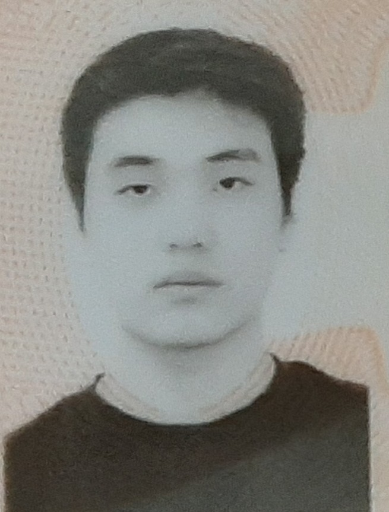

Email: t226t008@ku.edu
Major: Computer Engineering
School: University of Kansas
I am a KU student interested in embedded systems and computer architecture. I also enjoy playing and watching basketball, specfically the NBA. My favorite team is the Sixers but I am a devoted Victor Wembanyama fan.
University of Kansas Engineering